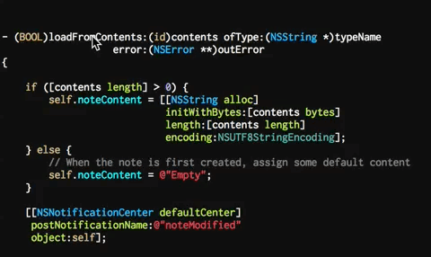
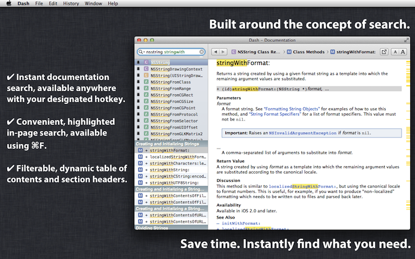
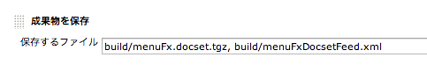

メソッドの手前で///を打つとAPIドキュメント用コメントが生成されるXCodeプラグイン
APIドキュメントを生成するツール
様々な形式に対応しています。
カスタマイズも結構できる
注意点
柔軟なだけあって、
設定項目がめちゃくちゃ多い！
おすすめ設定
# 解析したいプロジェクトの名前
PROJECT_NAME = "Your Project Name"
# 再帰的にソースコードのファイルを探索する
RECURSIVE = YES
# LaTeX で出力しない
GENERATE_LATEX = NO
# Graphviz で出力するための DOT ファイルを作る
HAVE_DOT = YES
# DOT ファイルの生成をマルチスレッドで行う
DOT_NUM_THREADS = 4
# コールグラフ (呼び出す側) を作る
CALL_GRAPH = YES
# コールグラフ (呼び出される側) を作る
CALLER_GRAPH = YES
# Dash用Docsetを生成する
GENERATE_DOCSET = YES
# 画面上部のタブをつけない
DISABLE_INDEX = YES
# 検索用テキストボックスをつけない
SEARCHENGINE = NO
# 画面左側のTreeViewをつけない
GENERATE_TREEVIEW = NO
# 出力先ディレクトリ
OUTPUT_DIRECTORY = "your output directory"
# 解析するソースコードがあるディレクトリ
INPUT = "project directory"
様々なAPIドキュメントを素早く検索出来るアプリ

# docset Feed用xmlを作成
sed "s/{BUILD_NUMBER}/${BUILD_NUMBER}/" menuFxDocsetFeedTemplate.xml > build/menuFxDocsetFeed.xml
# docsetを作成
doxygen
cd build/html
make
mv org.doxygen.Project.docset menuFx.docset
tar zcvf menuFx.docset.tgz menuFx.docset
mv menuFx.docset.tgz ${WORKSPACE}/build/menuFx.docset.tgz
Jenkinsの「成果物を保存」でDocset FeedとDocsetを保存するだけ

最後にビルドした際にできたDocset FeedとDocsetが
下記のようなURLからダウンロード可能
http://localhost:8080/job/pjname/lastCompletedBuild/artifact/docsetFeed.xml
http://localhost:8080/job/pjname/lastCompletedBuild/artifact/docset.tgz
URLスキーマを使うとリンクをクリックするだけで
Docset Feedを登録できる。
dash-feed://の後にDocset FeedのURLを
URLエンコードしたものを繋げる。
menuFxというMacアプリを最近リリースしました。
為替レートをメニューバーでチェックできるアプリです。